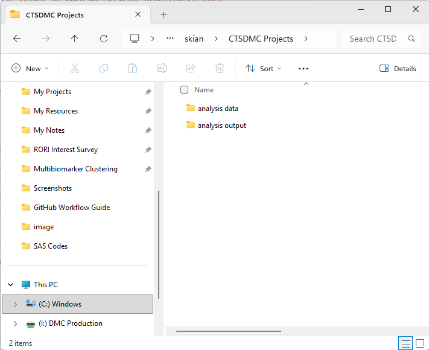
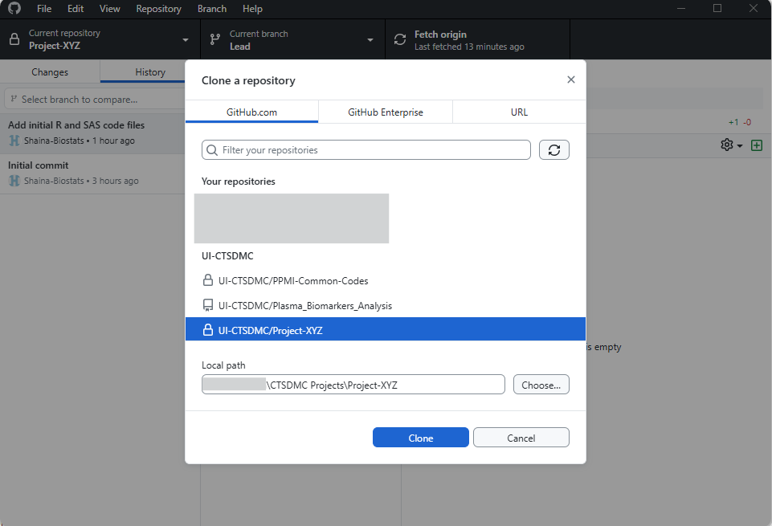
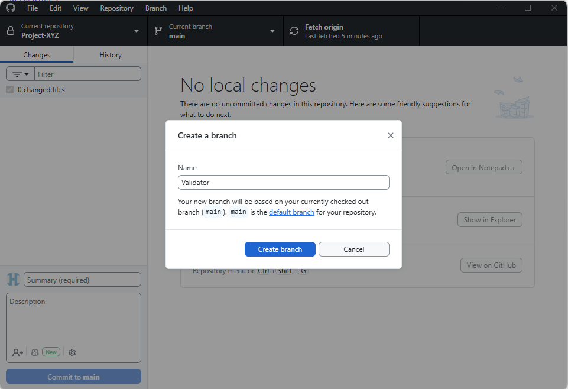
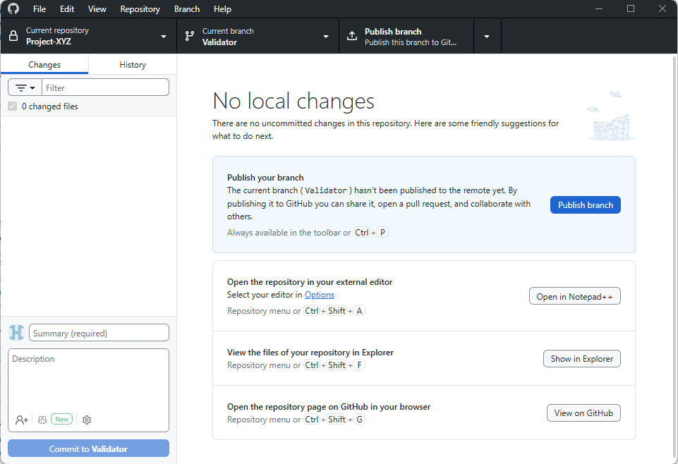
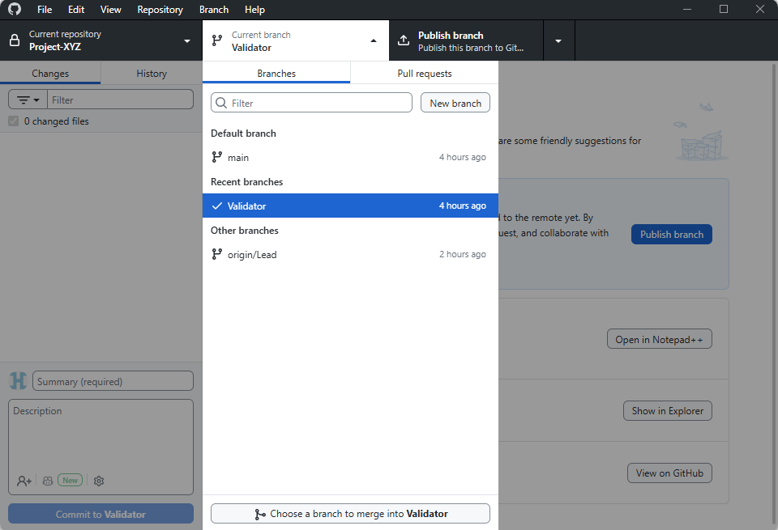
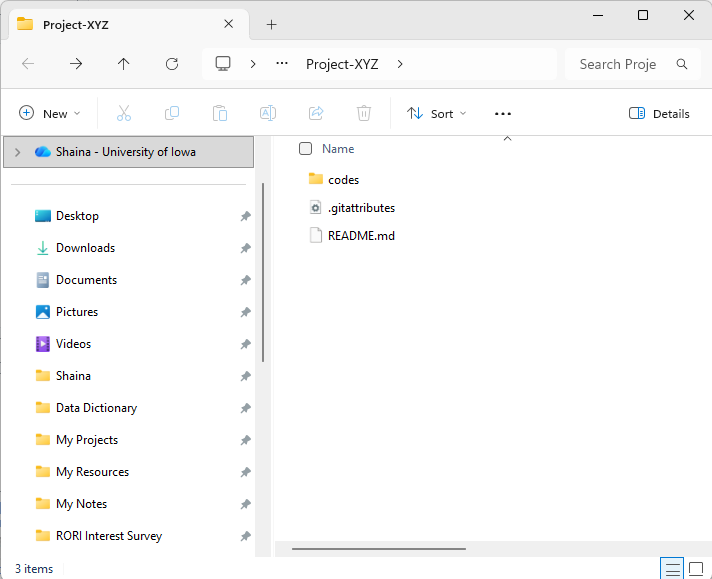
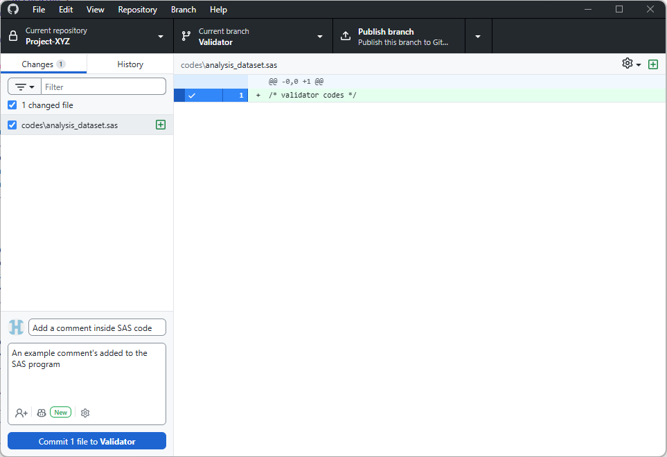
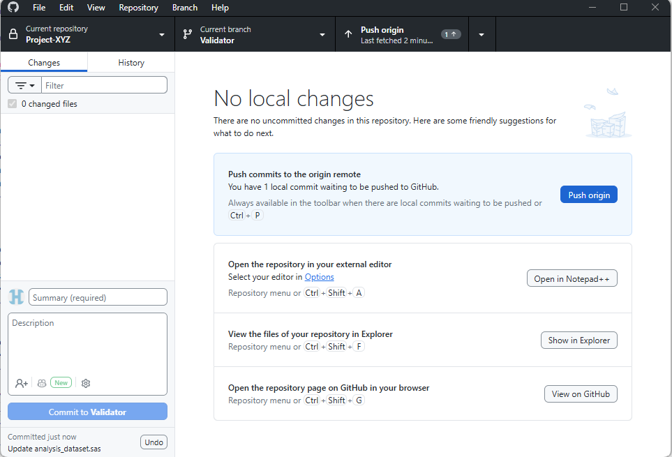
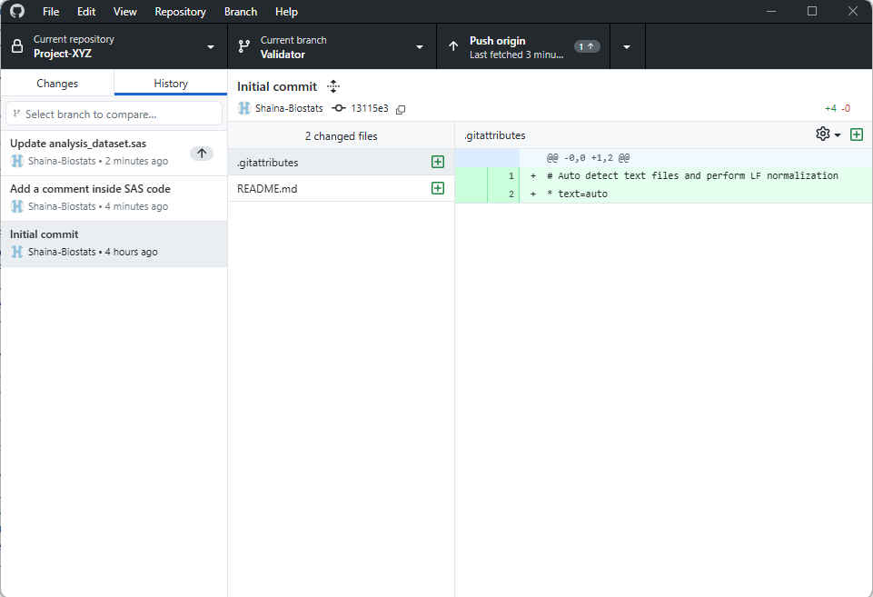

Work on an Existing Project
Join an existing repository or continue working on your own branch.
Already working on this project? Skip any setup steps you've completed and continue with your existing repository and branch.
First Time: Prepare Your Local Project Folder
If you are joining a project for the first time, start by creating a parent project folder on your computer. Within this folder, you may create separate folders for data, results, and other files that should not be shared through GitHub.
The GitHub repository will be a separate subfolder inside your parent project folder. Do not create the repository subfolder manually; GitHub Desktop will create it when you clone.

Prepare a parent project folder for the project's repositoryClone the Existing Repository
Open GitHub Desktop and select File → Clone Repository. Under the GitHub.com tab, find the project repository in the UI-CTSDMC organization, such as Project-XYZ.

Clone the project's repository to your local project's folderAlready Cloned? Open Your Repository
If you have already cloned the repository, you do not need to create the project folders or clone it again. Simply open your existing local repository in GitHub Desktop. If it is not listed, select File → Add Local Repository and choose the existing repository folder.
First Time: Create and Publish Your Branch
In GitHub Desktop, make sure the repository is selected. Select Current Branch → New Branch. Create a new branch from main using the agreed name for your role, such as Validator. Click Create Branch, then Publish Branch to make it available on GitHub.

Create branch
Publish your branchBranch Already Exists: Select Your Branch
If you already have a working branch, you do not need to create another one. Open Current Branch and select your existing branch. If the branch is available on GitHub but not yet listed locally, click Fetch Origin first, then select the branch.

Select your branchOpen Your Repository Files
In GitHub Desktop, select Repository → Show in Explorer to open your local repository folder. The folder contains the files currently available on your selected branch.
Edit or Add Project Files
Open the existing files and continue your work. You can edit code, add new files, or create subfolders as needed. If this is your first time working on the project, organize the files required for your role.
you can work with the appropriate code files or add new files to these folders.

Create local folder for GitHub materialsReview and Commit Your Changes
Save your files and return to GitHub Desktop. Open the Changes tab to review the modified or newly added files. Enter a descriptive commit summary and click Commit to your branch.
Important: Before committing, please review Commit Best Practices for guidance on commit messages and when to commit.

Commit your changesPush Your Changes to GitHub
After committing, click Push Origin to upload your commits to GitHub. If the branch has not been published yet, select Publish Branch instead. Repeat the commit and push process as you continue working.

Push changes to GitHubReview Commit History
In GitHub Desktop, select your working branch and open the History tab. Select a commit to review which files were changed and examine the recorded changes.

Review commit history